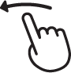

| Z | Toggle zoom-to-fill | |
| M←→ |  | Mirror (reflect horizontally) |
| F↑↓ | Flip (reflect vertically) | |
| R | Rotate 90° | |
| Alt + Enter | Toggle fullscreen (experimental / must right-click to re-enable keyboard shortcuts) | |
| C | Change cameras | |
| P Space | Pause/play (aka "freeze") | |
| H? | Display help | |